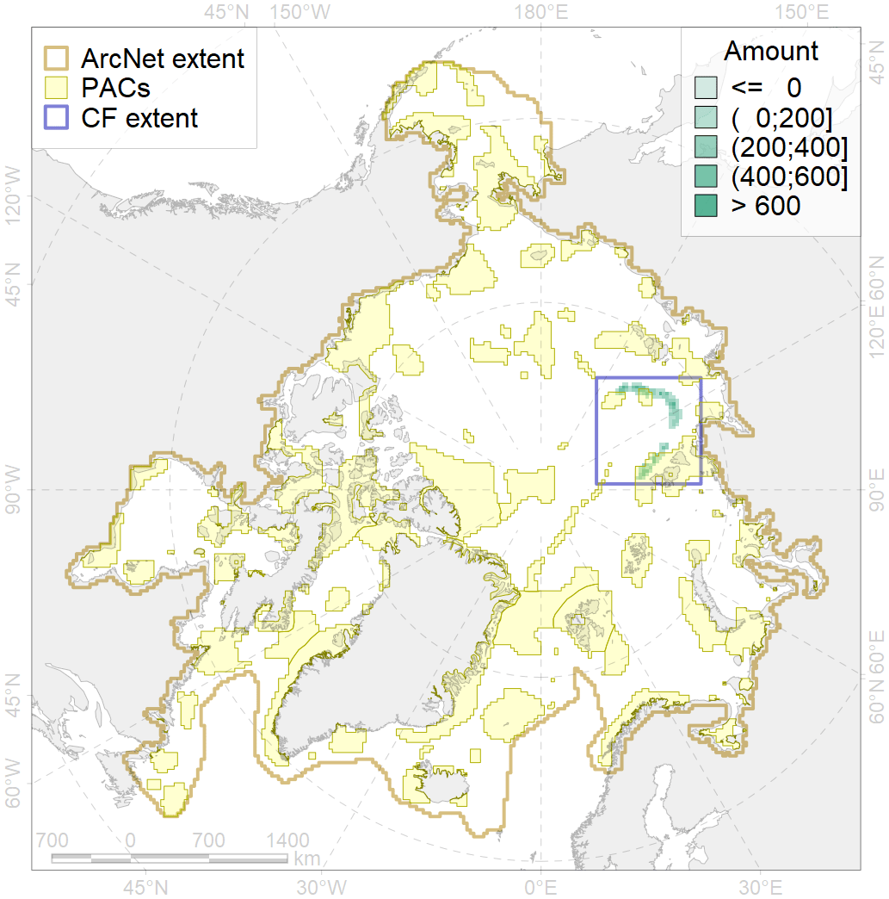
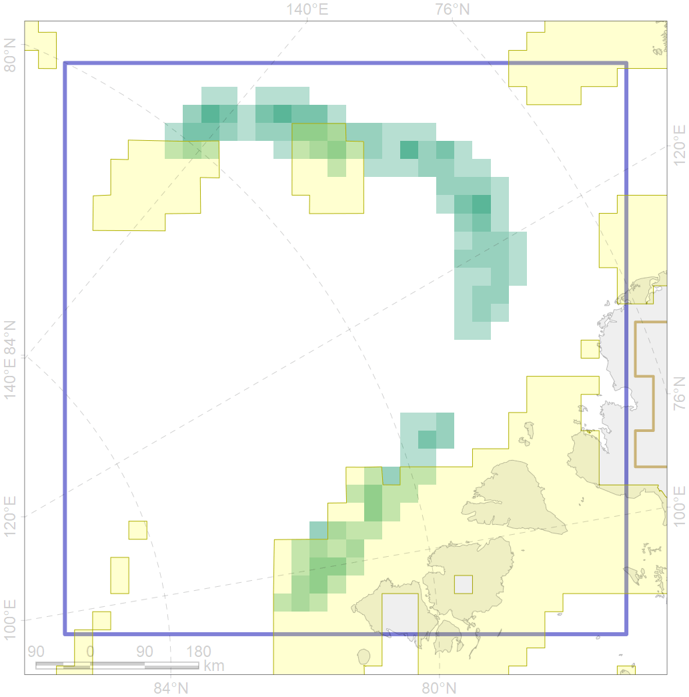

7118

| CF code | 7118 |
| CF name | II.1.2.3. Laptev Sea slope canyons |
| Time Period | At least last 100 years |
| Source(s) | Harris et al., 2014; Carmack, Wassmann, 2006 |
| Seasonality | 1-12 |
| Depth Horizon | Sea floor |
| Methodology | Data obtained from the literature |
| Use Restrictions | Open access |
| Author Name | V. Spiridonov, W. Merritt |
| Notes | |
| Scenario’s Target | 0.25 |
| Target Achievement | 0.292 (Scenario: 116.7%) |
| PAC | Share of the Total Amount within the PAC | Share of the Target Achievement for the ArcNet | PAC’s Contribution to the Target Achievement |
|---|---|---|---|
| 14 | 19.1%20.1% | 64.3%66.1% | 55.1%56.7% |
| 82 | 1.5%3.6% | 3.4%6.6% | 2.9%5.6% |
| 83 | 7.7%8.9% | 13.0%13.9% | 11.1%11.9% |
| inner | 28.3%32.6% | 80.7%86.6% | 69.1%74.2% |
| outer | 71.7%78.4% | 36.1%47.6% | 30.9%40.8% |
| † supplement values are for area consistence whereas principal values are for Accenter compatible gridded stats |